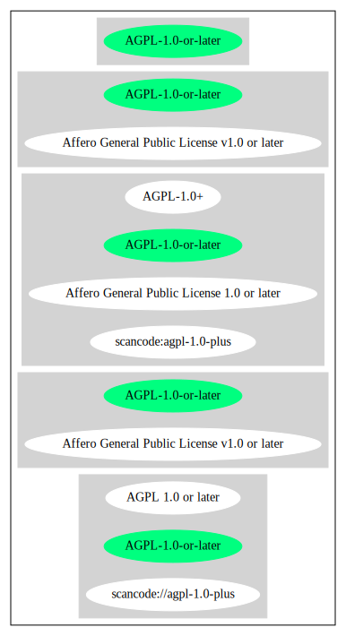

Key |
Value |
|---|---|
Fullname |
Affero General Public License v1.0 or later |
Shortname |
AGPL-1.0-or-later |
Rating |
Unknown, probably Attention or Stop or No-Go |
Classification |
Copyleft |
Other Names:
scancode://agpl-1.0-plus
AGPL 1.0 or later
Homepage: http://www.affero.org/oagpl.html
SPDX: http://spdx.org/licenses/AGPL-1.0-or-later.json
This is free software; you can redistribute it and/or modify
it under the terms of the AFFERO GENERAL PUBLIC LICENSE as published by
Affero Inc; either version 1, or (at your option) any later version.
This library is distributed in the hope that it will be useful, but
WITHOUT ANY WARRANTY; without even the implied warranty of
MERCHANTABILITY or FITNESS FOR A PARTICULAR PURPOSE. See the
AFFERO GENERAL PUBLIC LICENSE for more details.
{
"__impliedNames": [
"AGPL-1.0-or-later",
"Affero General Public License v1.0 or later",
"scancode://agpl-1.0-plus",
"AGPL 1.0 or later"
],
"__impliedId": "AGPL-1.0-or-later",
"facts": {
"SPDX": {
"isSPDXLicenseDeprecated": false,
"spdxFullName": "Affero General Public License v1.0 or later",
"spdxDetailsURL": "http://spdx.org/licenses/AGPL-1.0-or-later.json",
"_sourceURL": "https://spdx.org/licenses/AGPL-1.0-or-later.html",
"spdxLicIsOSIApproved": false,
"spdxSeeAlso": [
"http://www.affero.org/oagpl.html"
],
"_implications": {
"__impliedNames": [
"AGPL-1.0-or-later",
"Affero General Public License v1.0 or later"
],
"__impliedId": "AGPL-1.0-or-later",
"__isOsiApproved": false,
"__impliedURLs": [
[
"SPDX",
"http://spdx.org/licenses/AGPL-1.0-or-later.json"
],
[
null,
"http://www.affero.org/oagpl.html"
]
]
},
"spdxLicenseId": "AGPL-1.0-or-later"
},
"Scancode": {
"otherUrls": null,
"homepageUrl": "http://www.affero.org/oagpl.html",
"shortName": "AGPL 1.0 or later",
"textUrls": null,
"text": "This is free software; you can redistribute it and/or modify\nit under the terms of the AFFERO GENERAL PUBLIC LICENSE as published by\nAffero Inc; either version 1, or (at your option) any later version.\n\nThis library is distributed in the hope that it will be useful, but\nWITHOUT ANY WARRANTY; without even the implied warranty of\nMERCHANTABILITY or FITNESS FOR A PARTICULAR PURPOSE. See the \nAFFERO GENERAL PUBLIC LICENSE for more details.\n",
"category": "Copyleft",
"osiUrl": null,
"owner": "Affero",
"_sourceURL": "https://github.com/nexB/scancode-toolkit/blob/develop/src/licensedcode/data/licenses/agpl-1.0-plus.yml",
"key": "agpl-1.0-plus",
"name": "Affero General Public License 1.0 or later",
"spdxId": "AGPL-1.0-or-later",
"_implications": {
"__impliedNames": [
"scancode://agpl-1.0-plus",
"AGPL 1.0 or later",
"AGPL-1.0-or-later"
],
"__impliedId": "AGPL-1.0-or-later",
"__impliedCopyleft": [
[
"Scancode",
"Copyleft"
]
],
"__calculatedCopyleft": "Copyleft",
"__impliedText": "This is free software; you can redistribute it and/or modify\nit under the terms of the AFFERO GENERAL PUBLIC LICENSE as published by\nAffero Inc; either version 1, or (at your option) any later version.\n\nThis library is distributed in the hope that it will be useful, but\nWITHOUT ANY WARRANTY; without even the implied warranty of\nMERCHANTABILITY or FITNESS FOR A PARTICULAR PURPOSE. See the \nAFFERO GENERAL PUBLIC LICENSE for more details.\n",
"__impliedURLs": [
[
"Homepage",
"http://www.affero.org/oagpl.html"
]
]
}
}
},
"__impliedCopyleft": [
[
"Scancode",
"Copyleft"
]
],
"__calculatedCopyleft": "Copyleft",
"__isOsiApproved": false,
"__impliedText": "This is free software; you can redistribute it and/or modify\nit under the terms of the AFFERO GENERAL PUBLIC LICENSE as published by\nAffero Inc; either version 1, or (at your option) any later version.\n\nThis library is distributed in the hope that it will be useful, but\nWITHOUT ANY WARRANTY; without even the implied warranty of\nMERCHANTABILITY or FITNESS FOR A PARTICULAR PURPOSE. See the \nAFFERO GENERAL PUBLIC LICENSE for more details.\n",
"__impliedURLs": [
[
"SPDX",
"http://spdx.org/licenses/AGPL-1.0-or-later.json"
],
[
null,
"http://www.affero.org/oagpl.html"
],
[
"Homepage",
"http://www.affero.org/oagpl.html"
]
]
}